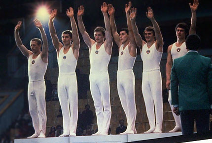

Bogdan Makuts (USSR)
1979 and 1981 European V and PB
Champion
1980 World Cup AA Champion
1981 World AA Silver Medalist

Bogdan Makuts (3rd from right) won team gold at the 1980 Olympics.
|
Medal Total:
Olympic Games: 1 Gold |
Makuts was born in Lvov (Ukraine) on April 4, 1960. He began gymnastics at the rather late age of 10. His first coach was Valentin Frantskevich. After a few years trainer Evgeny Paitra took over. Bogdan's mother worked as a cleaner in a hospital, and his father worked at a pastry shop.
Makuts was a member of the gold-medal Soviet team at the 1980 Olympics, but a serious injury sustained a few months earlier, at the 1980 Moscow News, nearly kept him off the team. The following year he won the overall silver medal at the world championships, where he was one of only two gymnasts to score a perfect 10 during the all-around competition. He retired briefly in 1984, after learning that the Soviet Union would not participate in the Los Angeles Olympics. But an invitation to replace an injured gymnast on the Ukrainian team brought Bogdan back to the training hall. At the 1985 USSR Championships, he helped his team to a 2nd place finish. He continued to compete in All-Union competitions until 1987.
Today, Makuts still lives in Lvov and is the head coach of the men's and women's gymnastics teams at the Army Sports Club. He's also a brevet judge and judged at both the 1996 and 200 Olympic Games. His son, Taras, plays tennis.
Competition Results
1977
Jr. USSR Championships: 3rd AA
1978
Children's Specialized Sports Schools Championships: 1st V
Coca Cola International: 1st AA
FRA-USSR-BUL: 1st Team, 1st AA
International Championships of Romania: 7th AA, 1st HB, 3rd PB, 5th FX, 5th PH, 5th V
Jr. European Championships: 1st AA, 1st FX, 1st V, 1st HB, 2nd R, 2nd PB,
3rd PH
Jr. Friendship Tournament (Druzhba): 1st Team, 1st AA
Jr. USSR Championships: 1st AA, 1st FX, 1st VT
Jr. USSR-GDR-HUN: 1st Team, 2nd AA
1979
American Cup: 2nd AA
European Championships: 2nd AA, 1st V, 1st PB, 2nd
R, 3rd PH
Moscow News: 1st AA, 1st FX, 1st PH, 1st V, 1st PB, 2nd R, 3rd HB
University Games: 1st Team, 1st AA, 1st PH, 1st V, 1st PB, 1st HB, 2nd FX,
6th R
USSR Championships: 5th AA, 2nd HB, 3rd PB, 4th V, 5th FX, 5th PH
USSR Cup: 3rd AA
USSR Spartakiade: 5th AA
World Championships: 1st Team, 11th AA (prelims)
1980
Olympics: 1st Team, 6th AA (prelims)
USSR Championships: 5th AA, 2nd FX, 3rd PB, 4th V, 6th R
USSR Cup: 3rd AA
World Cup: 1st AA, 1st R, 1st HB, 2nd V, 2nd
R, 2nd PB, 5th FX
1981
European Championships: 3rd AA, 1st V, 1st PB, 3rd
HB
Milan Grand Prix: 2nd AA
USSR Championships: 2nd AA, 1st R, 1st HB, 2nd FX, 2nd PB, 5th V, 7th PH
USSR Cup: 5th AA, 1st PB, 3rd PH
World Championships: 1st Team, 2nd AA, 3rd R, 3rd
V, 4th PB
1982
Budapest Invitational: 1st PB, 3rd R, 4th PH
USSR Championships: 1st AA, 1st R, 1st HB, 2nd FX, 2nd PH, 2nd PB
World Cup: 4th AA, 3rd PH, 4th R, 5th FX, 5th V, 7th HB, 8th PB
1983
USSR Championships: 5th AA,
2nd HB, 5th R, 6th PB
USSR Cup: 5th AA, 4th R, 4th PB, 5th V
1984
USSR Cup: 10th AA
1985
USSR Championships: 2nd Team, 4th AA (prelims)
This page was created on May 11,
2002 and was last updated on March 24, 2026.
© Gymn Forum